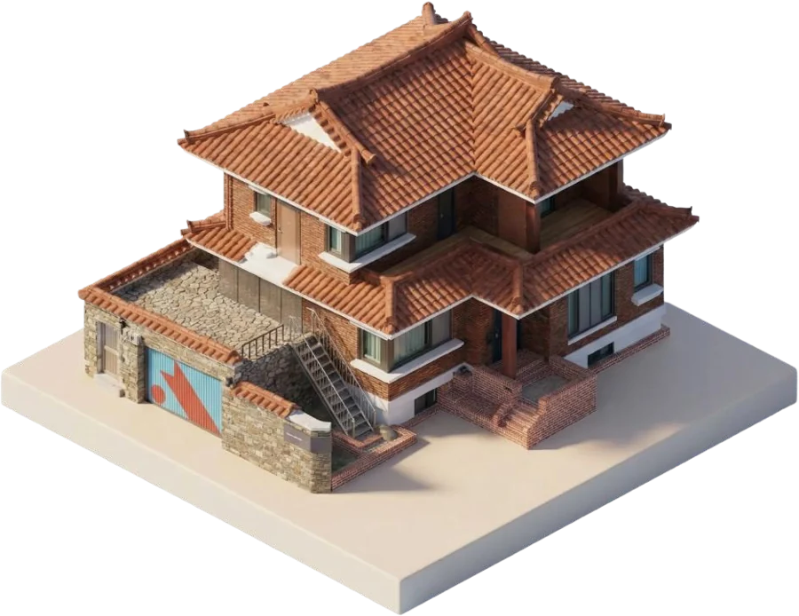
nonce Heterotopia
- NAME
- 논스 헤테로토피아 (前 논스 3호점 NONSTOP)
- TYPE
- CO-LIVING
- PHILOSOPHY
- 창업의 치열함과 일상의 낭만이 충돌하지 않고
공존할 수 있는 창업가들의 아지트 - TECHNOLOGY
- 인터커넥팅 대시보드 리추얼, 비정기적 낭만 활동인터커넥팅 대시보드 리추얼
비정기적 낭만 활동 - YEAR
- 2019 ~ Now
- PEOPLE
- 89
- APPLY
- 지원 가능 · 2027년 입주
Introduction
논스 커뮤니티의 마지막 창업가 하우스
창업가들이 한 지붕 아래 모이면 무슨 일이 벌어질까요. 매일 밤 피칭 연습, 끝없는 피드백 세션, 치열한 토론. 많은 사람들이 그런 그림을 상상합니다. 그러나 막상 창업의 한가운데 서 본 사람들은 압니다. 정작 필요한 건 누군가와 밥을 먹으며 나누는 별것 아닌 대화, 지친 하루 끝에 기댈 수 있는 온기라는 것을.
헤테로토피아 Heterotopia는 이 역설 위에 세워진 공간입니다. 효율만을 좇는 삶 사이에 의도적으로 여백을 만들고, 낭만이라는 이름의 비효율을 품습니다. 현재 논스 커뮤니티에서 유일하게 운영 중인 이 창업가 하우스는, 치열하게 싸우는 동시에 따뜻하게 쉬어갈 수 있는 창업가 코리빙 하우스가 가능하다는 것을 증명하고 있습니다.
Philosophy
창업의 치열함과 일상의 낭만이 공존하는 창업가들의 아지트
창업가들이 함께 모여 산다고 하면 흔히 이런 장면을 떠올립니다 — 매일 이어지는 사업 이야기, 인사이트 공유, 날카로운 피드백. 그러나 논스 커뮤니티 속 창업가들에게 필요한 것은 다른 곳에 있었습니다. 함께 차려 먹는 따뜻한 밥, 네가 혼자가 아니라는 것을 매일 일깨워주는 공동체 의식.
창업의 치열함과 일상의 낭만은 충돌하지 않고 오히려 공존하는 곳이 논스 헤테로토피아입니다. 헤테로토피아는 주변의 환경과 이질적인 성격을 띠는 대안적 유토피아를 의미하며, 역삼동 빌딩 숲 사이 국기원 일대에 위치한 헤테로토피아는 논스 창업가 하우스의 모습을 완벽하게 정의하죠. 불확실한 모험을 택한 사람들이 한데 모여, 유니콘을 꿈꾸면서도 라면으로 끼니를 때우고, 투자 고민부터 연애 상담까지 진심으로 나눌 수 있으며, 낮에는 각자의 전선에서 치열하게 싸우고, 퇴근하면 함께 밥을 차려 먹으며 도란도란 하루를 마무리할 수 있는, ‘사람 냄새가 나는 창업가 하우스’로 공간을 디자인하였습니다.
Technology
인터커넥팅 대시보드 리추얼
헤테로토피아는 인터커넥팅 대시보드라는 장치를 통해 입주 멤버들의 성장을 설계합니다. 매월 초 모든 창업 팀은 하나의 월별 KPI를 설정하고, 매주 달성 현황을 투명하게 공유합니다.
창업가들은 대개 자신의 사업 상황에 대한 이야기를 쉽게 꺼내지 않는다는 사실을 알고 있기에, 대시보드라는 장치를 통해 커뮤니케이션의 벽을 낮추었습니다. “저번 주보다 많이 오르셨네요, 어떻게 하셨어요?”라는 질문이 자연스럽게 오가고, 사업적인 대화가 일상이 됩니다.
또한, 한 달이 끝나면 반상회를 통해 회고하고, 다음 달의 KPI를 새로 세팅합니다. 이 사이클이 1년간 이어지면서, 리추얼에 참여하는 것만으로도 멤버들은 커뮤니티 안에서 지속적으로 연결되고, 창업가로서 성장할 수 있게 됩니다.
비정기적 낭만 활동
헤테로토피아는 낭만적인 활동을 비정기적으로 할 것을 문화적으로 지향합니다. 월별 반상회를 하다가 갑자기 을왕리로 떠나 한밤중에 바다를 보고 돌아오기도 하고, 새해에는 다 함께 등산을 하며 마음을 다잡기도 합니다. 누군가 힘들다고 신세 한탄을 하면 술 한잔 기울이기도 하죠.
창업가는 끊임없이 효율을 추구해야 하고, 그 과정에서 닳아 갑니다. 그렇기에 헤테로토피아는 의도적으로 비효율을 끼워 넣습니다. 비효율이어서 가치 있는 것들, 낭만이라 부를 수밖에 없는 것들. 이것이 험난한 창업가들의 일상 속에서 숨을 고를 수 있는 템포가 되어줍니다.
Results
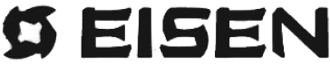
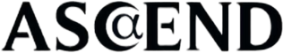
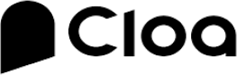
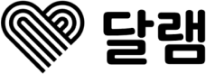
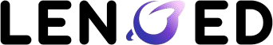
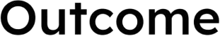
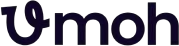
See More
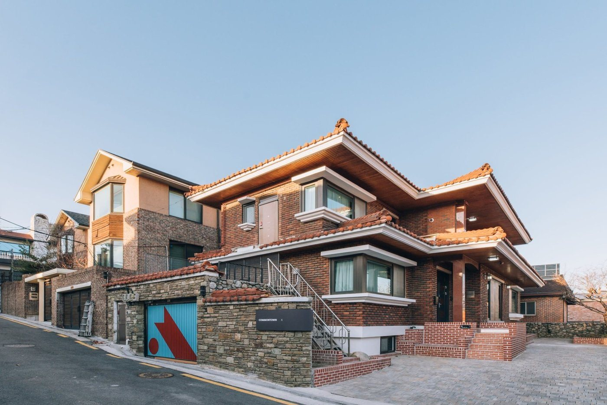
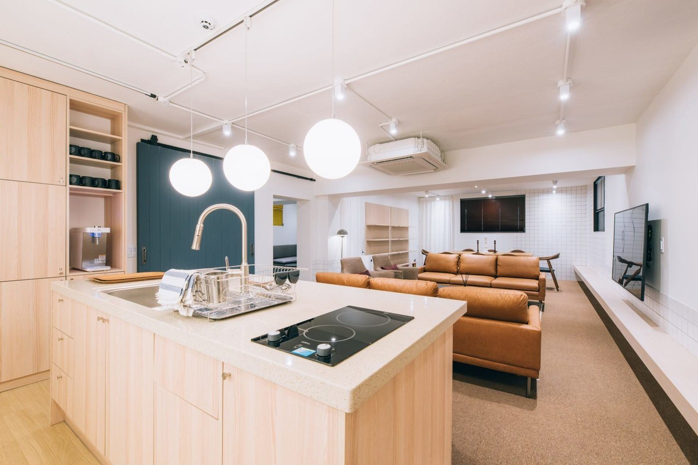
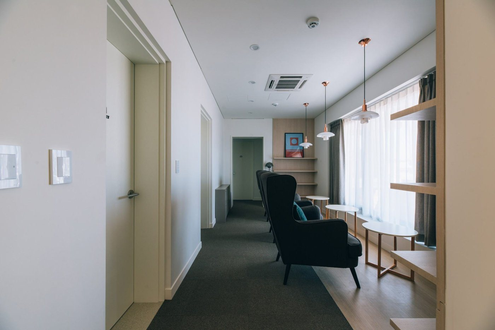
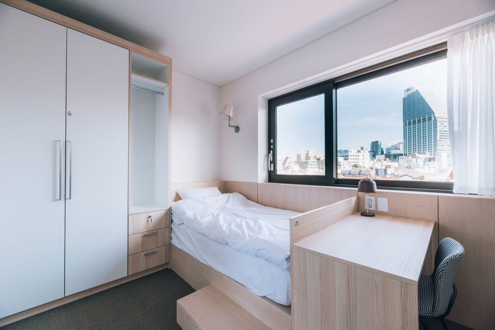